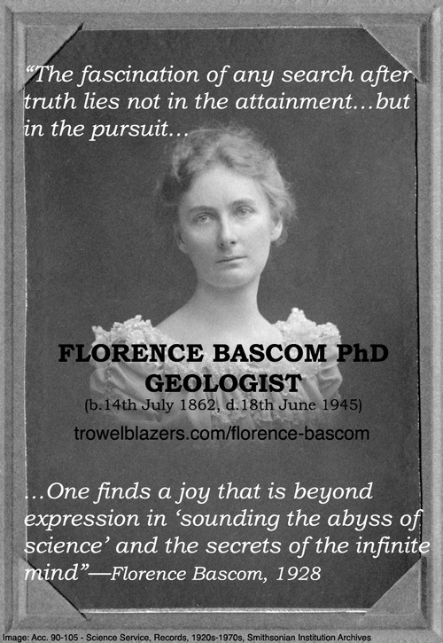

BIOGRAPHY
Florence(1862-1945) was the first women and first geologist to be awarded a Ph.D. from Johns Hopkins University, as well as the first woman scientist hired by the United States Geological Survey (USGS).
Florence was born in Williamstown, Massachusetts in 1862. She was the daughter of John Bascom, a professor at Williams College who was later elected to be President of University of Wisconsin-Madison. John Bascom was a supporter of women's right, so Florence was highly encouraged to go to college by her father. Although it was not common for women to go to college in her time, Florence earned her B.A. degree (1882) and B.S. degree (1884) from the University of Wisconsin. Later on, she received her M.S. degree in 1887, and then she received a Ph.D. from Johns Hopkins University in 1893. Shortly after, she started teaching and founded the department of geology in Bryn Mawr College in Pennsylvania ("Florence Bascom" n.d.).
Florence pioneered the use of microscopes in the study of minerals and rocks. Moreover, she was accredited with significant contribution to the understanding of the formation of the Appalachian mountain range through her studies in petrology ("Biographies of Women in Science" n.d.). She was highly rated in the magazine, "American Men of Science", which later changed name to "American Men and Women of Science". Later, she became the very first woman elected to the Geological Society of America (GSA) (Eckel, 1982). She was also a member of many other scientific societies and achieved greatly in her field.